Secure web portal for the MDRRMO
The MDRRMO web dashboard is protected by role-based accounts with secure login, giving dispatchers and administrators a single place to manage emergencies.

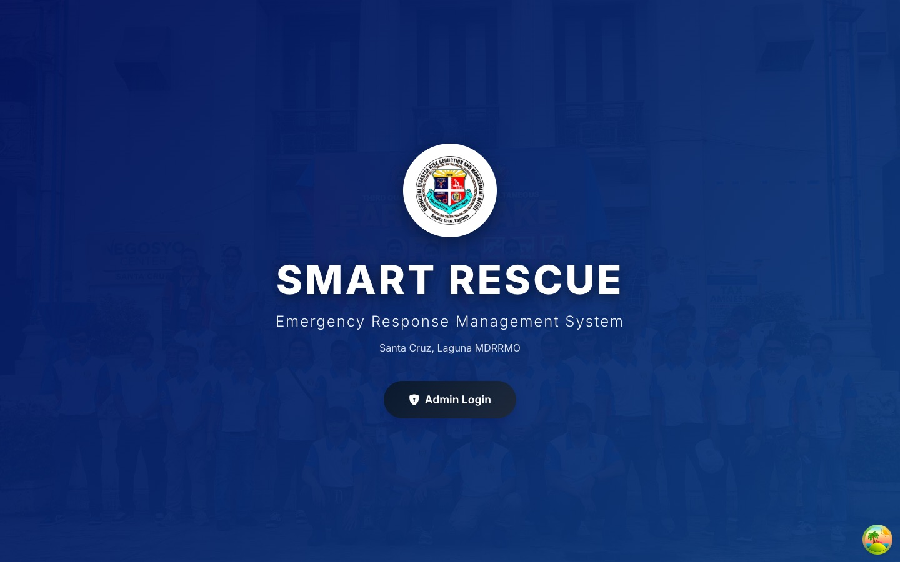
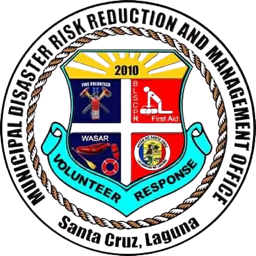
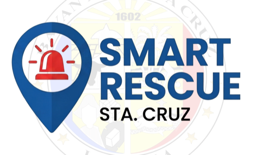
Laguna State Polytechnic University College of Computer Studies Santa Cruz, Laguna
Capstone Research Project
Bachelor of Science in Information Technology major in Web and Mobile Application Development
The Municipal Disaster Risk Reduction and Management Office (MDRRMO) plays an essential role in strengthening disaster preparedness, risk reduction, emergency communication, and response operations at the municipal level. Its responsibilities are anchored in the Philippine Disaster Risk Reduction and Management Act of 2010 or Republic Act No. 10121, which provides the legal framework for disaster risk reduction and management in the Philippines. The law mandates local government units to establish a Local Disaster Risk Reduction and Management Office (LDRRMO) responsible for coordinating and implementing disaster risk reduction and management programs within their respective jurisdictions.
Traditional reporting through voice calls and other communication channels requires the manual collection, recording, verification, and dispatch of incident information. Studies on emergency reporting have identified challenges involving non-standardized reporting, information management, communication, and coordination that may affect emergency response operations. Mobile technology offers a means of improving the collection and dissemination of emergency information. For instance, Edillo et al. (2017) developed a mobile-based emergency reporting application for the Philippine National Police Emergency Hotline 911 that utilized smartphone geolocation to provide location information to emergency personnel and reduce the need for manual data collection.
Similarly, Rey et al. (2024) developed “Mamamayan”, a mobile community-based emergency reporting and notification system for Makati City in the Philippines. The system demonstrates the feasibility of using mobile technology to enable residents to report emergencies and notify authorities. However, the operational needs of a disaster management office may extend beyond emergency reporting alone.
Incoming reports must be processed, prioritized, assigned to appropriate responders, and monitored throughout the response. While existing systems provide functions such as citizen reporting, notifications, mapping, and emergency information management, these are often handled separately. This highlights the need for an integrated platform that combines incident reporting, location information, prioritization, responder coordination, and centralized monitoring in one workflow.
To address this need, the researchers propose “Smart Rescue: A Web-based and Mobile Emergency Reporting and Response Management System for MDRRMO in Santa Cruz, Laguna with Automated Incident Prioritization.” The system provides a web-based dashboard for MDRRMO responder to receive, monitor, prioritize, and manage incidents, while its mobile platform allows users to submit emergency reports with incident and location details. It also supports emergency operations through real-time notifications, responder coordination, duplicate-report detection, and analytics.
The study aims to consolidate these technologies into a unified emergency reporting and response management process that supports the operational requirements of the MDRRMO of Santa Cruz, Laguna. The developed system will undergo functional and simulation testing, as well as user acceptance and usability evaluation, to determine its capability to support emergency reporting, incident prioritization, response coordination, location-based services, and centralized incident management.
The research study aims to improve and modernise the existing emergency monitoring system through the development, testing and evaluation of “Smart Rescue: A Web-Based and Mobile Emergency Reporting and Response Management System with Automated Incident Prioritization” for the Municipal Disaster Risk Reduction and Management Office (MDRRMO) of Santa Cruz, Laguna.
In particular, the aim is to improve emergency reporting, response coordination and incident management through a centralized, real-time and intelligent platform.
This section explains the overall methodology and describes the steps to conduct the capstone project. It describes the methodical and chronological process of finding the study participants, obtaining the requirements, creating the system, implementing the software with the relevant technologies and performing the technical and user assessments of the completed platform.
To develop a clear empirical base and to identify the functional and operational requirements of the proposed system, the researchers conducted the following fact-finding activities in sequence: direct observation, senior informant interview, and survey administration.
To ensure the successful development and deployment of the proposed emergency reporting and management web application, the researchers will follow a planned sequence of development activities aligned with the Agile framework. The major activities to be performed during the project life cycle will be as follows:
The researchers will conduct preliminary investigations, workflow analysis, and requirement-gathering meetings with staff from the Municipal Disaster Risk Reduction and Management Office (MDRRMO). These activities will establish the basic system objectives, identify operational bottlenecks in current reporting procedures, and specify the functional requirements and project scope.
Technical blueprints and visual representations of the proposed system will be prepared. The researchers will develop database models, system flow diagrams, system architecture diagrams, and responsive user-interface wireframes for both MDRRMO administrative users and community responders.
The researchers will iteratively create front-end and back-end application components. Development efforts will focus on the development of fundamental system modules such as automated incident reporting, real-time alarm dispatching, geospatial data mapping, and administrative resource management.
Continuous testing will be conducted to assess the functionality, security, compatibility, and performance of the application modules. Bugs, interface alignment failures, and database connection issues identified during the test cycles will be addressed before release.
The developed application will be deployed to a web server environment for technical and user acceptance testing (UAT). Evaluation questionnaires will be distributed to target end-users and MDRRMO responders to evaluate system usability, efficiency, and overall acceptance.
The final adjustments to the system based on the evaluation feedback will lead to the preparation of the system for operational launch. Orientation and training sessions will be organized for the MDRRMO workers, together with user documentation, to ensure smooth adoption and operation of the system.
The system is tested on its ability to:
Simulated emergency scenarios assess the system’s ability to:
In this section, the relevant hardware, software applications, programming languages, frameworks, databases, platforms, and development tools that are used to create, test, and deploy the Smart Rescue system are described.
| Component | Technologies |
|---|---|
| Mobile application (citizens and responders) | Flutter (Dart), Provider, Google Maps / flutter_map, Geolocator, Firebase Cloud Messaging |
| Web dashboard (MDRRMO) | React, Bootstrap, Leaflet with Leaflet.heat, Chart.js, jsPDF |
| Backend API and real-time server | Node.js, Express, Socket.IO, JSON Web Tokens |
| AI service (automated prioritization) | Python, FastAPI, spaCy (NLP), OpenAI CLIP / PyTorch and TensorFlow (computer vision) |
| Database | PostgreSQL with PostGIS |
| External services | Google Maps Platform, Cloudinary, Firebase, Twilio (SMS) |
The MDRRMO web dashboard is protected by role-based accounts with secure login, giving dispatchers and administrators a single place to manage emergencies.

A live operations map of Santa Cruz, Laguna shows active incidents inside the official municipal boundary, together with live statistics, responder availability, current weather and a city-wide siren control.
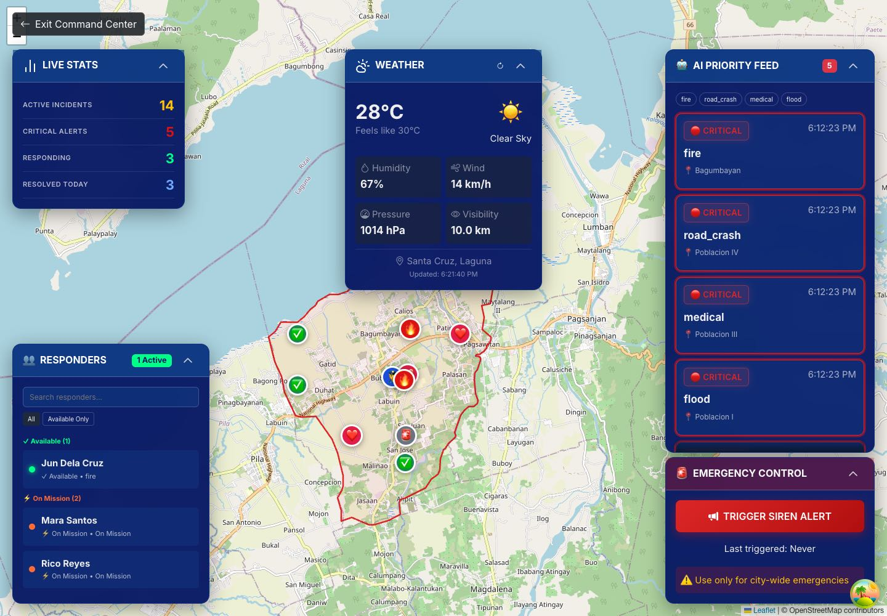
Each report is analyzed automatically: natural language processing reads the description and computer vision checks the attached photo, then the system assigns a priority level (Critical, High, Medium or Low) so the most urgent incidents surface first.
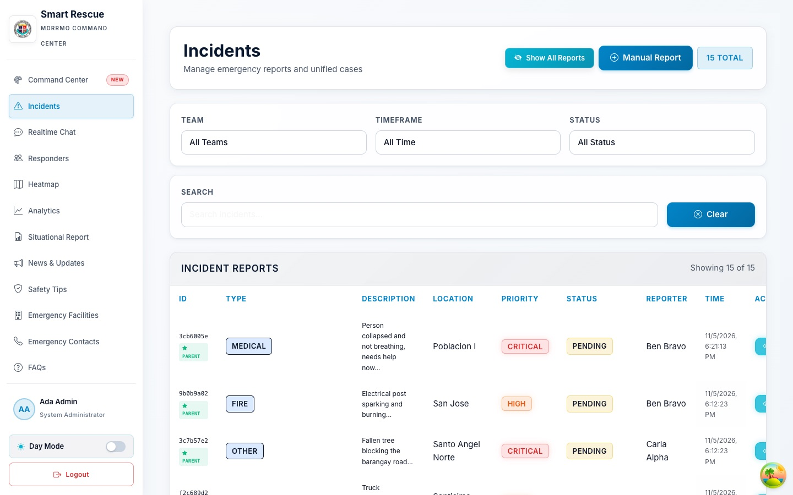
Reports of the same emergency are merged automatically into a single case when they are within 20 meters, within 20 minutes and of the same incident type, so one incident is not dispatched twice.
A heatmap shows where incidents are concentrated, with filters by time period, emergency type and priority.
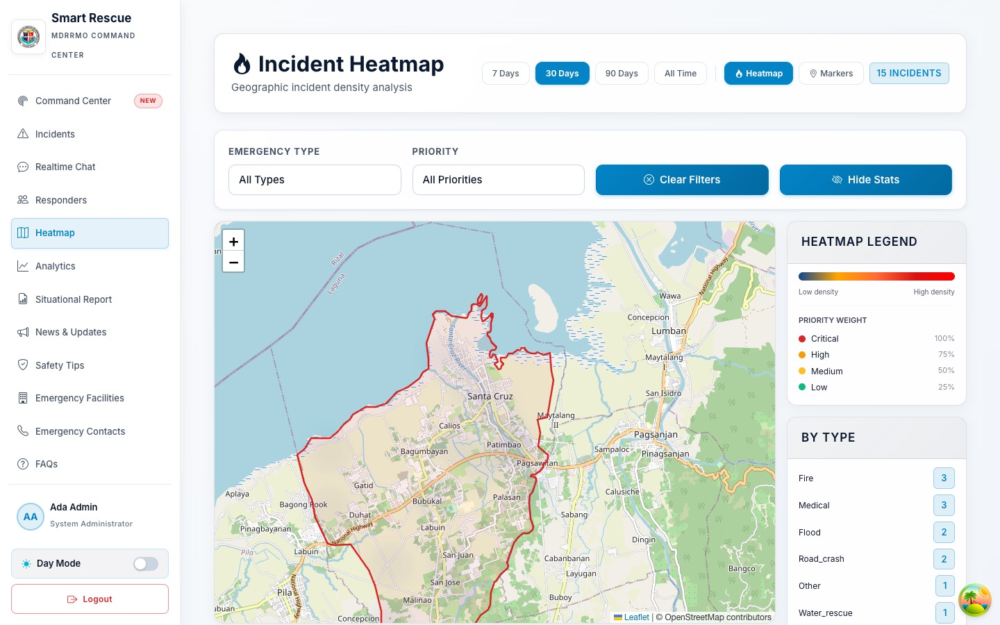
Dispatchers and reporting citizens communicate through incident-based real-time chat, while push notifications and alert sirens announce new incidents.
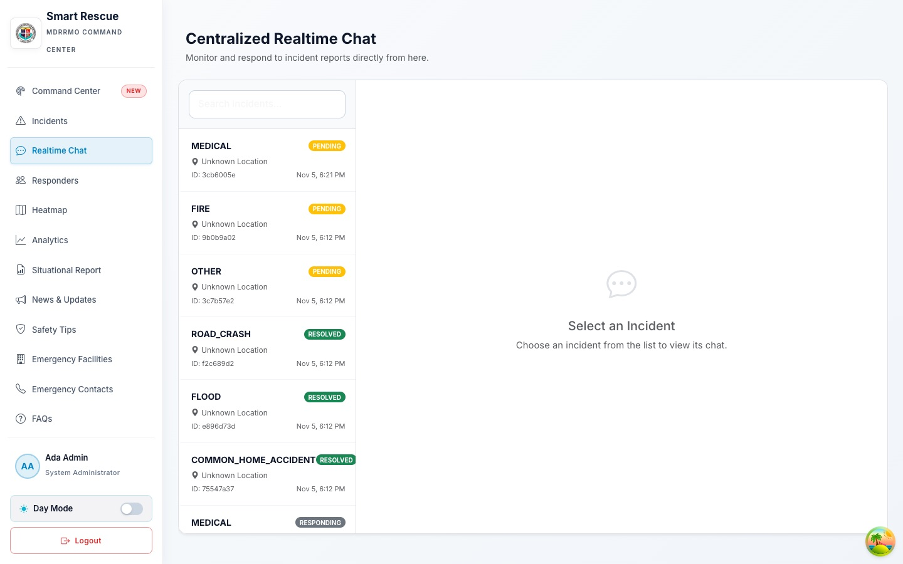
Dashboards summarize daily cases, response times and priority distribution, and Daily Situation Reports can be generated and exported as PDF.
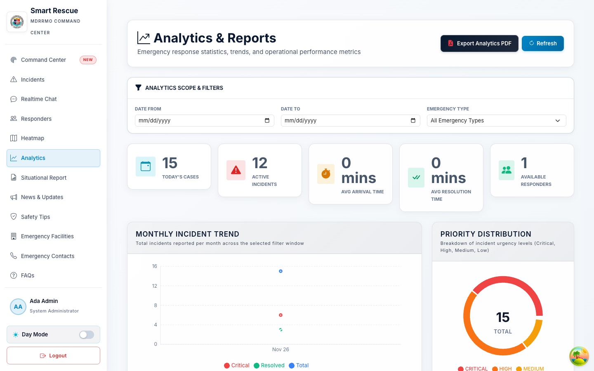
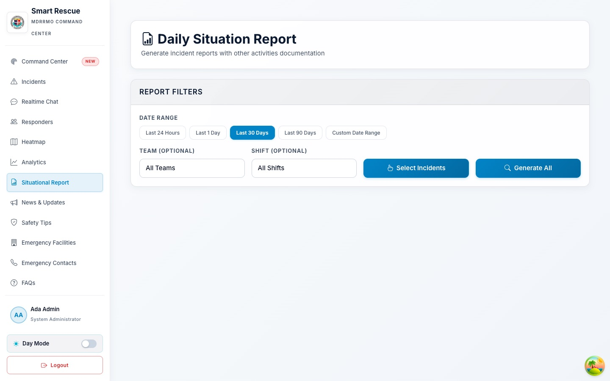
Citizens report emergencies from the mobile app with their GPS location and a photo as evidence. AI description suggestions help them write a clear, complete report quickly.
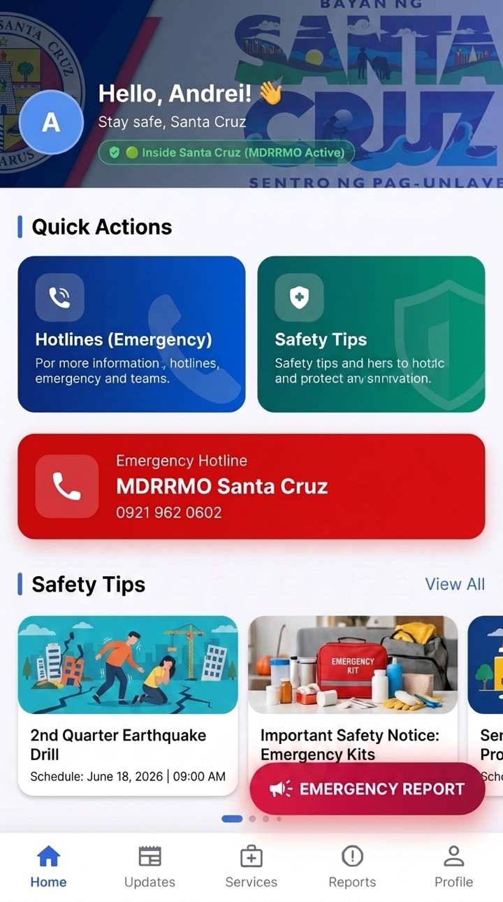
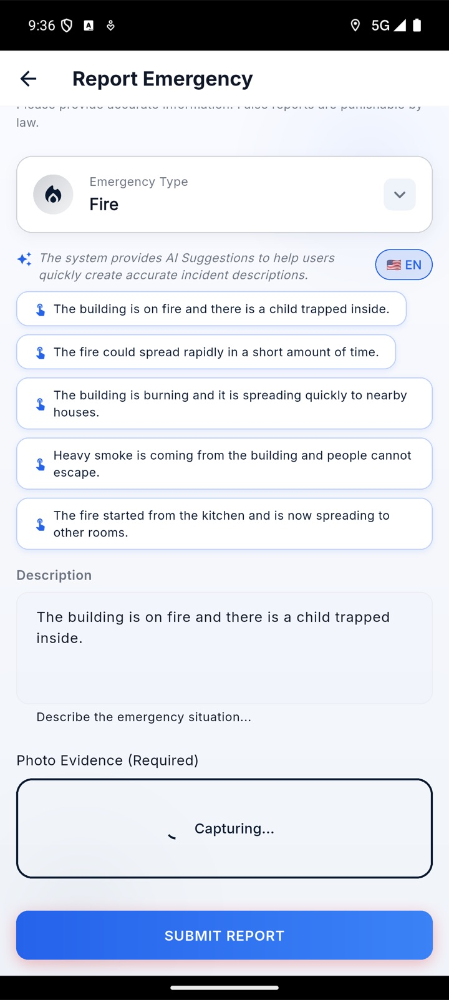
Citizens can follow the status and priority of every report they have submitted. Dispatchers assign incidents to on-duty responders, who receive them in the responder app and update their progress from the field.
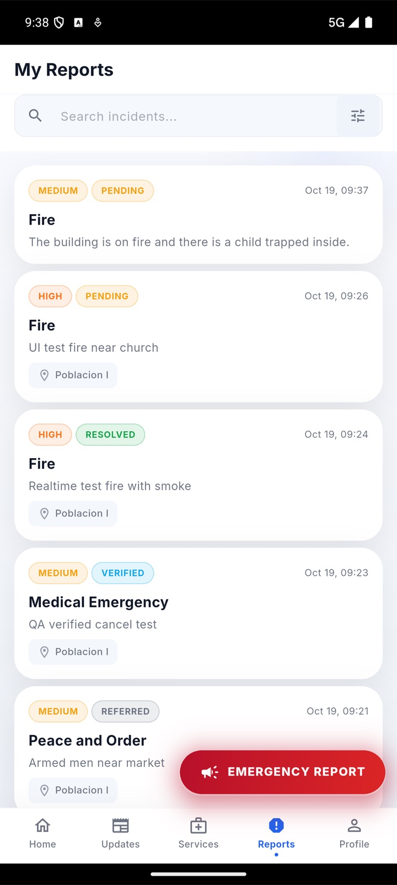
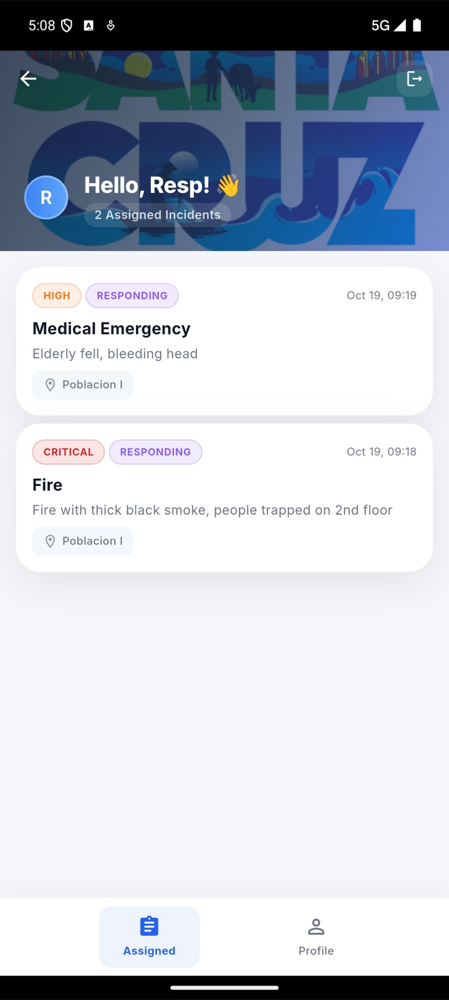
Reports are checked against the Santa Cruz municipal boundary, and users can view nearby emergency facilities such as evacuation centers and hospitals.